CS184 Spring 2026 Homework 4 Write-Up

Overview
Add your high-level overview here. Summarize what you implemented across the assignment, what you found interesting, and what stood out while working through cloth simulation and shaders.
Part 1: Masses and springs
-
Take some screenshots of
scene/pinned2.jsonfrom a viewing angle where you can clearly see the cloth wireframe to show the structure of your point masses and springs.Screenshots 1-3 below show
scene/pinned2.jsonfrom angles where the wireframe clearly reveals the point-mass and spring structure.Screenshot 1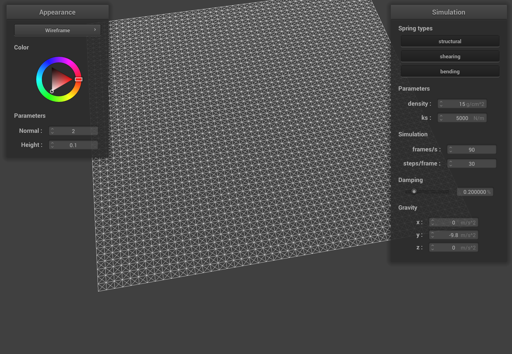
1_1_1.pngScreenshot 2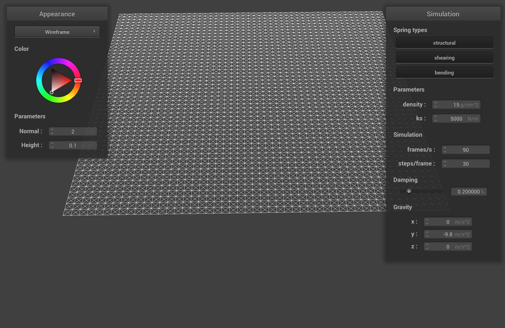
1_1_2.pngScreenshot 3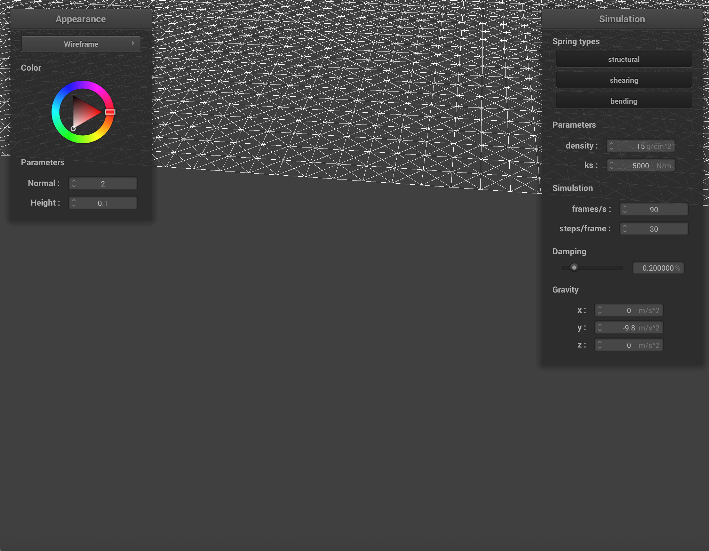
1_1_3.png -
Show us what the wireframe looks like (1) without any shearing constraints, (2) with only shearing constraints, and (3) with all constraints.
Screenshots 1-3 below show the cloth with no shearing constraints, with only shearing constraints, and with all constraints enabled, respectively.
Screenshot 1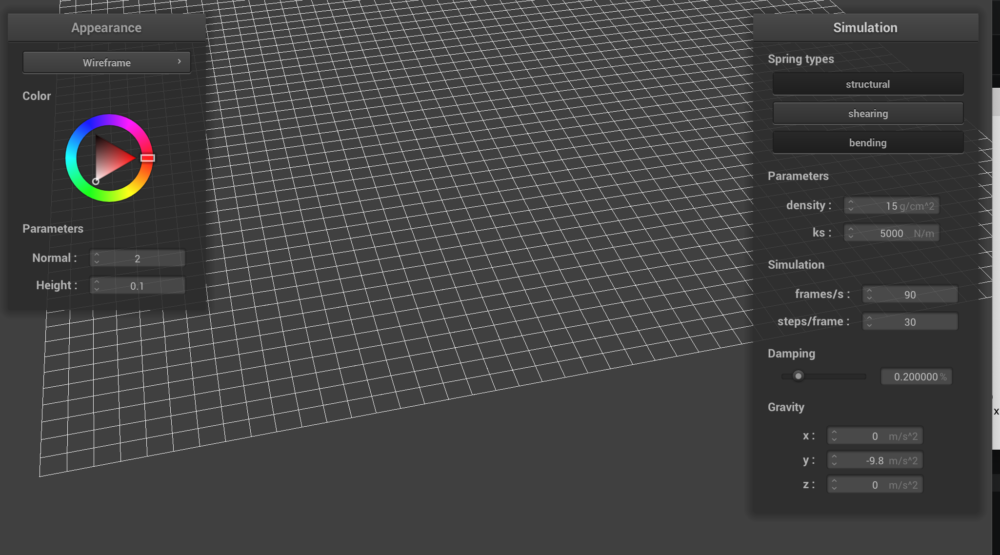
1_2_1.pngScreenshot 2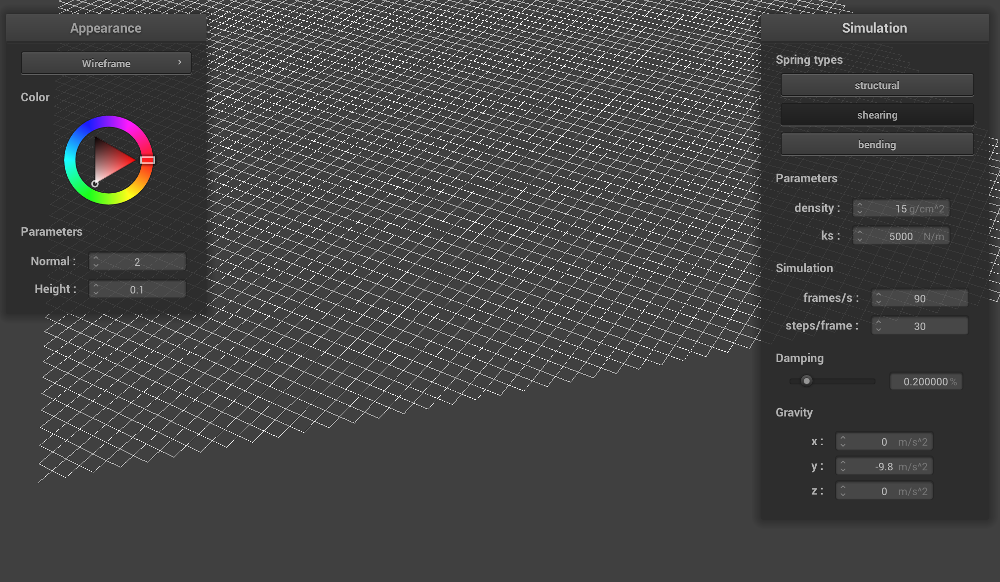
1_2_2.pngScreenshot 3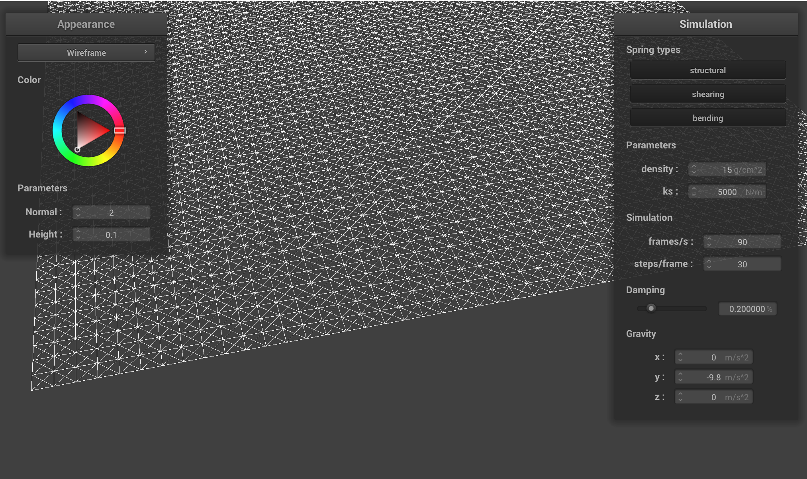
1_2_3.png
Part 2: Simulation via numerical integration
-
Experiment with some of the parameters in the simulation. To do so, pause the simulation at the start with
P, modify the values of interest, and then resume by pressingPagain. You can also restart the simulation at any time from the cloth's starting position by pressingR. Describe the effects of changing the spring constantks; how does the cloth behave from start to rest with a very lowks? A highks?With a very low
ks, the cloth behaves loosely and stretches easily. From start to rest it sags much farther, the grid deforms more visibly, and the cloth can look rubbery because neighboring point masses are not pulled strongly back toward their rest lengths. It can also take longer to settle because it overshoots and flops around more.With a high
ks, the cloth becomes much stiffer. It keeps its original shape better, stretches less, and comes to rest with less sag. Ifksis pushed extremely high, the simulation can become jittery or unstable because each timestep produces much larger spring forces. -
What about for
density?Higher
densitymakes the cloth effectively heavier. Gravity accelerates all masses equally, but the spring forces have less influence relative to the larger mass, so the cloth stretches more, sags lower, and responds more sluggishly. It tends to look heavier and more droopy overall.Lower
densitymakes the cloth feel lighter and more spring-dominated. It resists sagging more, rebounds more quickly, and generally looks tighter and more lively than the default setup. -
What about for
damping?Low
dampingmeans the cloth loses very little energy, so it swings, bounces, and oscillates for a long time before coming to rest. Compared to the default, it looks more energetic and can feel less realistic if it keeps moving for too long.High
dampingremoves energy quickly. The cloth overshoots less, settles faster, and generally moves in a more subdued way. If the damping is set very high, the motion can start to feel thick or sluggish, almost as if the cloth is moving through syrup. -
For each of the above, observe any noticeable differences in the cloth compared to the default parameters and show us some screenshots of those interesting differences and describe when they occur.
The comparisons below highlight how each parameter changes the cloth's motion and resting shape.
- Screenshot 1: low
ksafter the cloth has fallen, showing exaggerated sag and stretching. - Screenshot 2: high
ksat rest, showing a tighter, flatter, and less stretched cloth. - Screenshot 3: high
densityat rest, showing deeper sag than the default. - Screenshot 4: default
densityfor direct comparison with Screenshot 3. - Screenshot 5: low
dampingmid-motion, showing larger oscillations and bounce. - Screenshot 6: high
dampingafter a short time, showing faster settling with less swinging.
Screenshot 1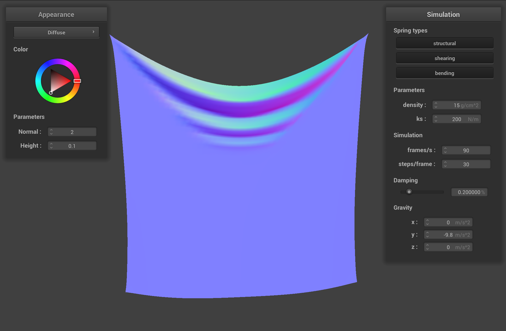
2_1_1.pngScreenshot 2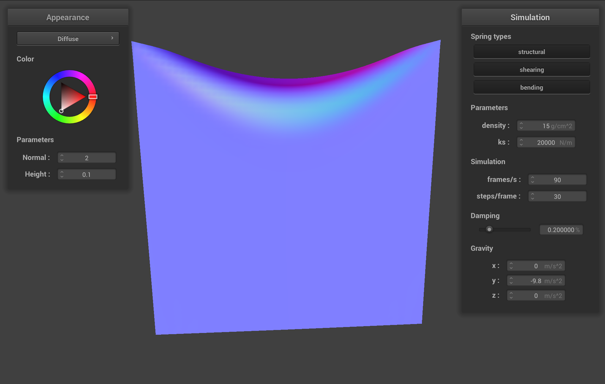
2_1_2.pngScreenshot 3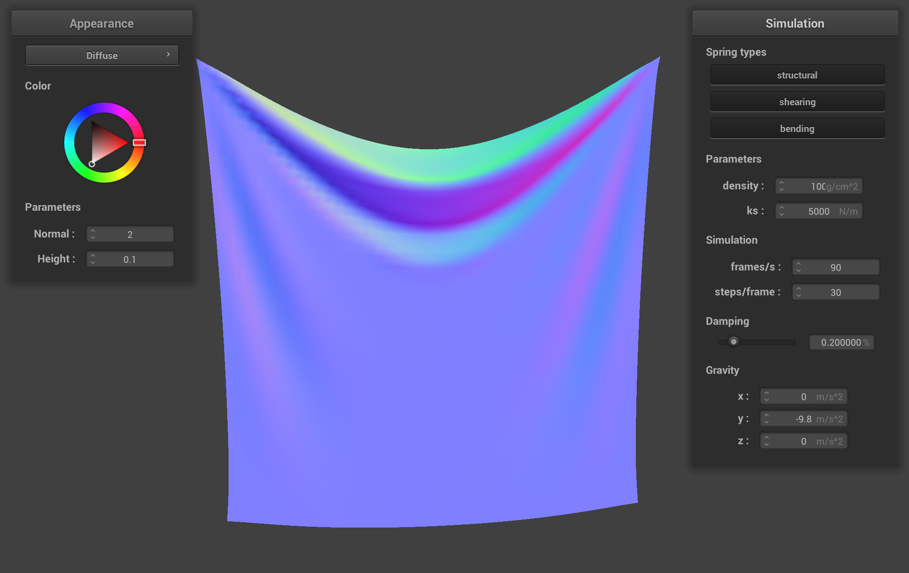
2_1_3.pngScreenshot 4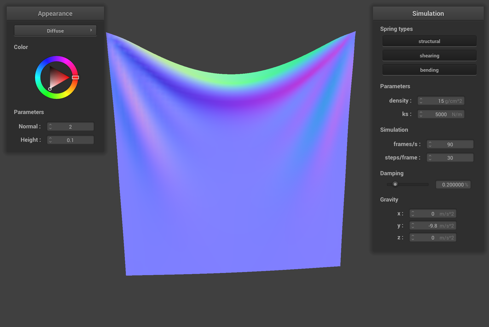
2_1_4.pngScreenshot 5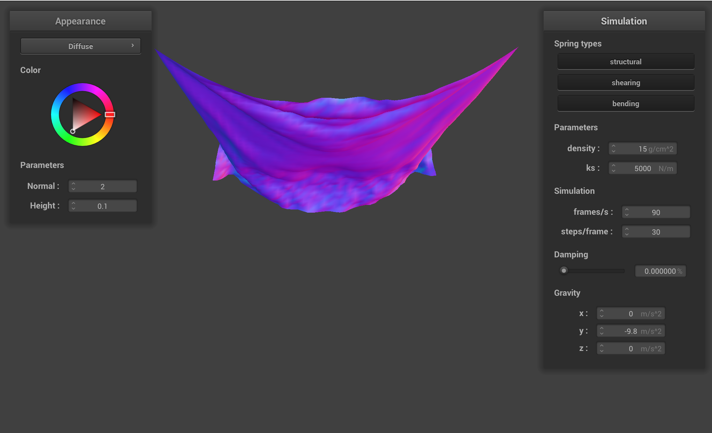
2_1_5.pngScreenshot 6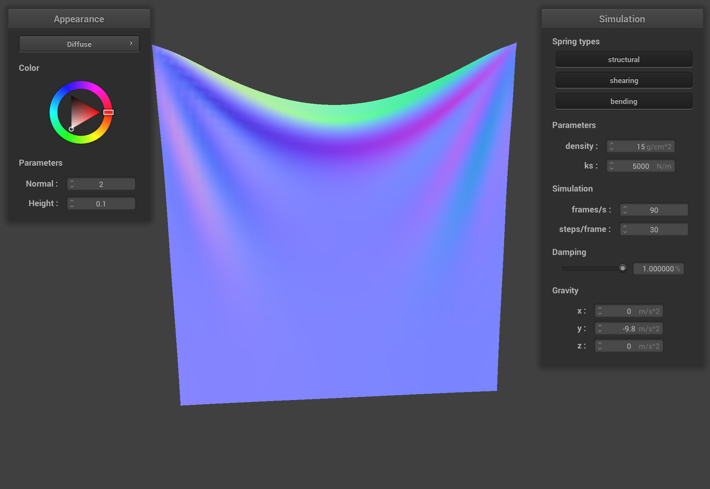
2_1_6.png - Screenshot 1: low
-
Show us a screenshot of your shaded cloth from
scene/pinned4.jsonin its final resting state! If you choose to use different parameters than the default ones, please list them.Screenshot 1 below shows the shaded cloth from
scene/pinned4.jsonin its final resting state using the default parameters.Screenshot 1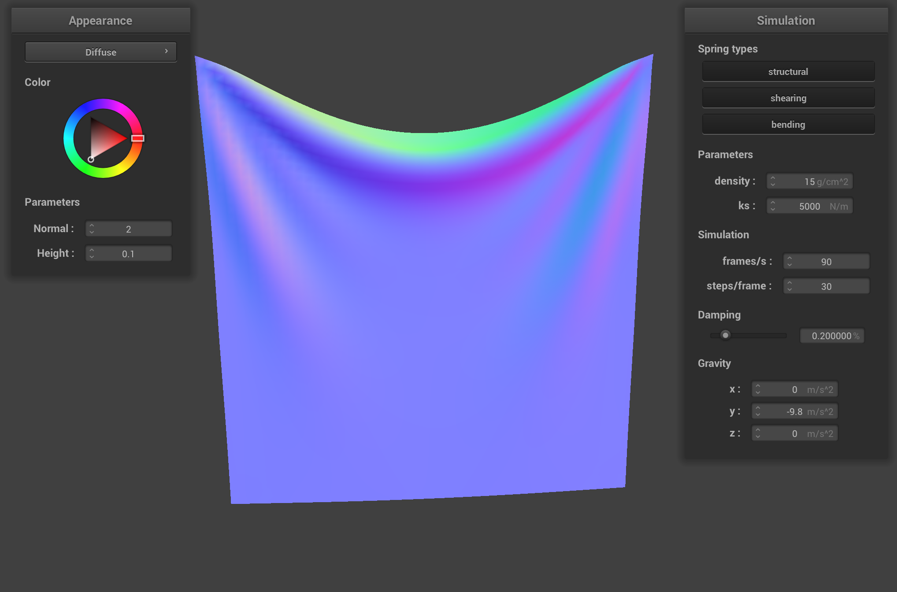
2_2_1.png
Part 3: Handling collisions with other objects
-
Describe your implementation of handling collisions with spheres and planes.
For spheres, I check whether a point mass's current position is inside or on the sphere by comparing its distance from the sphere origin to
radius. If a collision occurs, I compute the corresponding point on the sphere surface along the same radial direction, then move the point mass fromlast_positiontoward that surface point scaled by(1 - friction). This keeps the mass just outside the sphere while friction reduces sliding.For planes, I compute signed distances to the plane for both
last_positionand the current position. If the signs show that the point crossed the plane during the timestep, I project it back onto the plane, offset it slightly above the surface usingSURFACE_OFFSET, and again move fromlast_positiontoward that corrected point scaled by(1 - friction).I also updated
Cloth::simulateso that every point mass is tested against every collision object during each timestep. -
Show us screenshots of your shaded cloth from
scene/sphere.jsonin its final resting state on the sphere using the defaultks = 5000as well as withks = 500andks = 50000. Describe the differences in the results.Screenshots 1-3 below compare the cloth's final resting state on the sphere for three different spring constants.
- Screenshot 1 (
ks = 5000): the default cloth drapes naturally over the sphere and keeps a believable balance between sagging and shape retention. - Screenshot 2 (
ks = 500): the cloth is softer and stretchier, so it sags farther, wraps around the sphere more, and looks looser overall. The grid also stretches more visibly than in the default case. - Screenshot 3 (
ks = 50000): the cloth is much stiffer, so it resists stretching and sagging and looks more tent-like with less droop. At very high stiffness it can also settle less smoothly or show some jitter.
Screenshot 1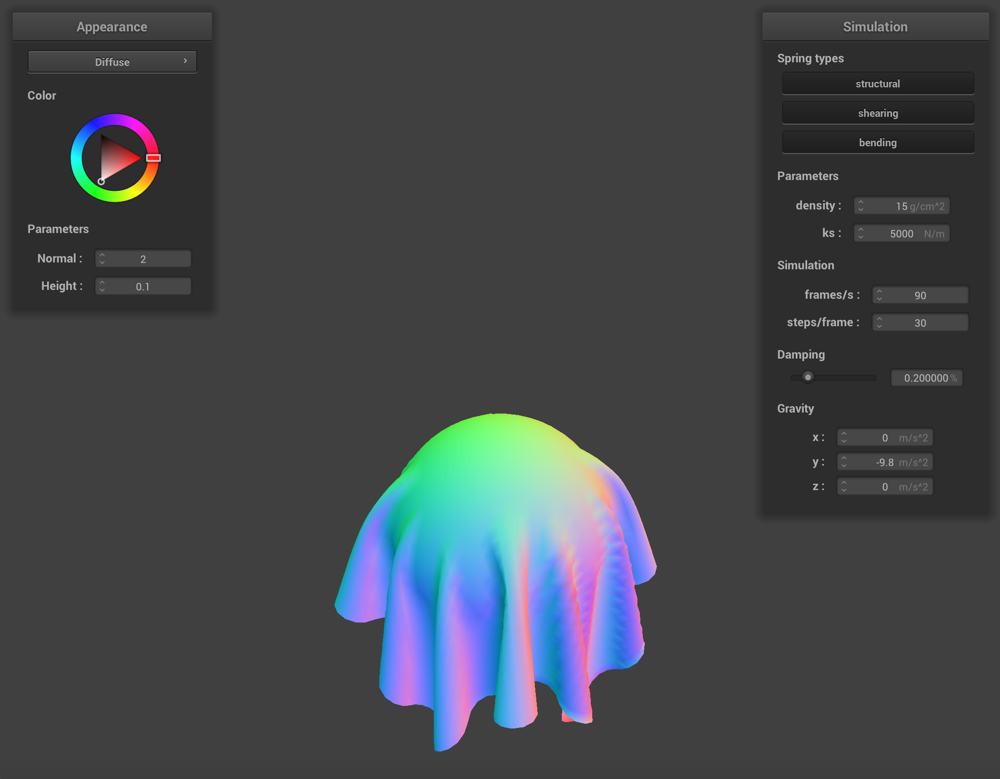
3_1_1.pngScreenshot 2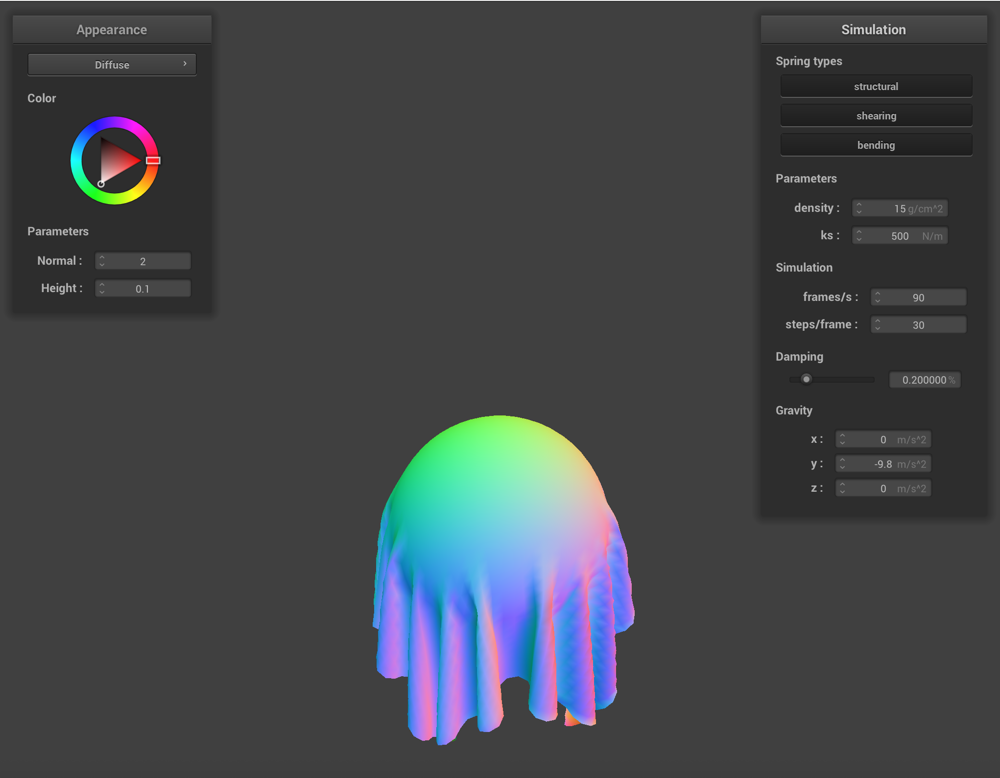
3_1_2.pngScreenshot 3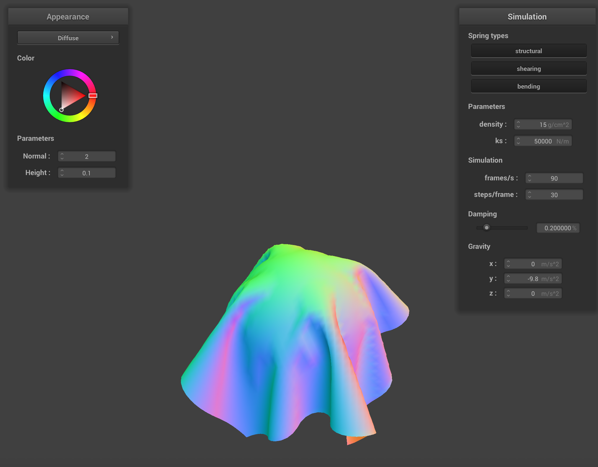
3_1_3.png - Screenshot 1 (
-
Show us a screenshot of your shaded cloth lying peacefully at rest on the plane. If you haven't by now, feel free to express your colorful creativity with the cloth! (You will need to complete the shaders portion first to show custom colors.)
Screenshot 1 below shows the shaded cloth resting on
scene/plane.json.In this scene, the cloth falls onto the plane and settles into a flatter shape than it does over the sphere. Instead of draping around curved geometry, the main visual effect is the cloth spreading out and resting peacefully against the surface.
Screenshot 1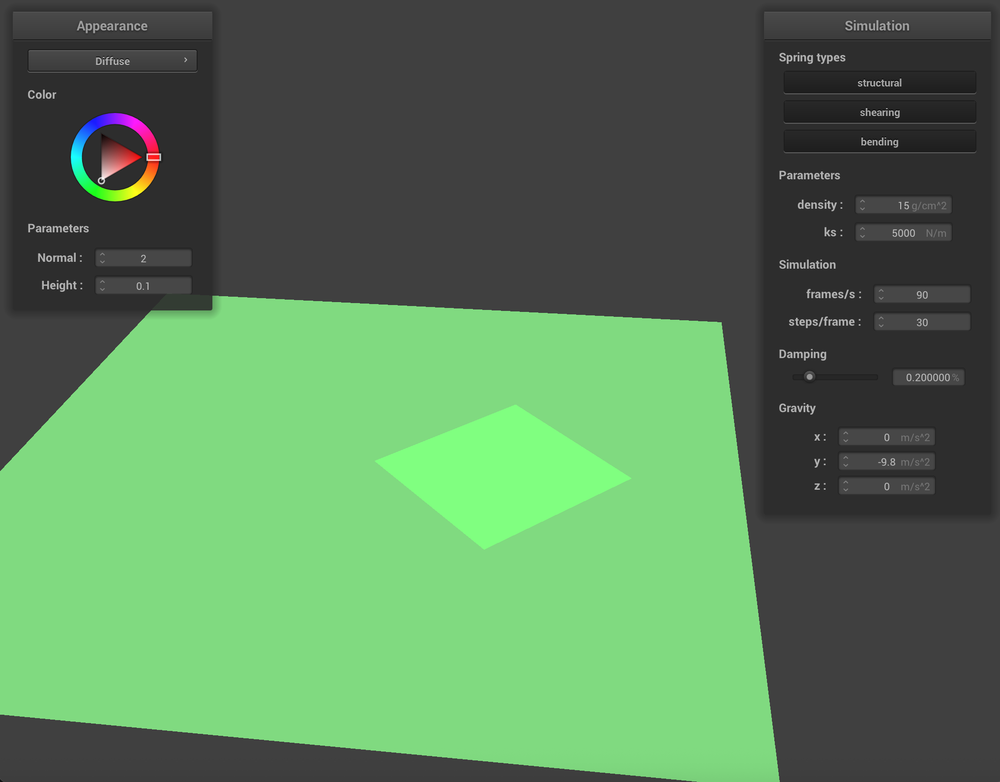
3_2_1.png
Part 4: Handling self-collisions
-
Describe your implementation of handling self-collisions.
I implemented self-collision using spatial hashing so the cloth does not need to compare every point mass against every other point mass.
At each timestep,
build_spatial_map()clears and rebuilds a hash table. Every point mass is assigned to a 3D spatial cell usinghash_position(), where the cell dimensions are based on the cloth width, height, and resolution. The map stores a list of point masses for each cell.Then
self_collide()checks only the point masses in the same spatial cell as the current point mass. If another mass is closer than2 * thickness, I compute a correction vector that pushes the current mass away until the two masses are at least2 * thicknessapart. If there are multiple nearby masses, I average all of the correction vectors and then divide bysimulation_stepsto avoid sudden large jumps.This prevents obvious clipping when the cloth folds onto itself while staying much faster than checking every pair of point masses directly.
-
Show us at least 3 screenshots that document how your cloth falls and folds on itself, starting with an early, initial self-collision and ending with the cloth at a more restful state (even if it is still slightly bouncy on the ground).
Screenshots 1-3 below show the cloth in
scene/selfCollision.jsonprogressing from the first visible self-contact to a more settled final state.- Screenshot 1: an early fall stage where the lower portion of the cloth first begins to contact another part of the cloth, showing the initial self-collision.
- Screenshot 2: a mid-fold stage where the cloth has collapsed further onto itself and distinct stacked layers begin to form instead of passing through each other.
- Screenshot 3: a resting or near-resting state where the cloth lies on the plane with visible folds piled on top of each other.
Screenshot 1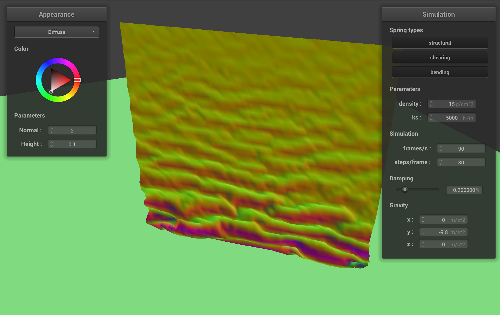
4_1_1.pngScreenshot 2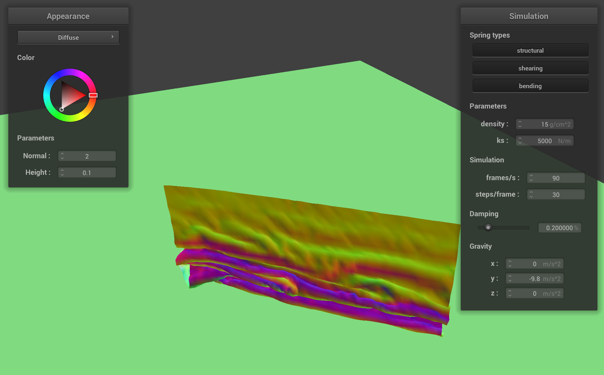
4_1_2.pngScreenshot 3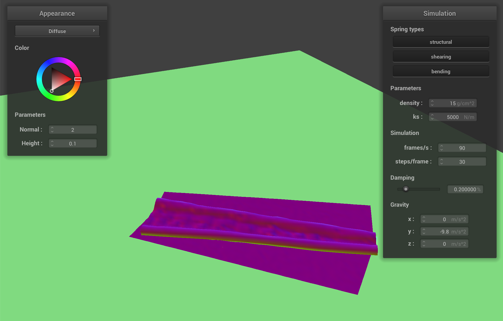
4_1_3.png -
Vary the
densityas well asksand describe with words and screenshots how they affect the behavior of the cloth as it falls on itself.Changing
densitymostly affects how heavy the cloth feels as it falls onto itself. Higher density makes the folds sag more, press down more strongly, and look deeper or more compressed because the cloth is less responsive to the spring forces. Lower density makes the cloth feel lighter, so it bounces more, folds less heavily, and keeps a slightly tighter shape.- Screenshot 1: low
density, showing lighter and bouncier folds. - Screenshot 2: default
density, showing a more balanced folding behavior. - Screenshot 3: high
density, showing heavier sagging and more compressed folds.
Changing
kscontrols how stiff or stretchy the cloth is during self-collision. Lowerksmakes the cloth softer, so it crumples more dramatically, sags into deeper folds, and looks more rubbery before settling. Higherksmakes the cloth stiffer, so the folds are broader and less droopy. At very high stiffness the cloth can also look more sheet-like and may show some extra bounce or jitter because of the stronger spring forces.- Screenshot 4:
ks = 500, showing softer material behavior and deeper folding. - Screenshot 5:
ks = 5000, showing the default, more natural-looking folds. - Screenshot 6:
ks = 50000, showing stiffer, wider folds with less stretch and possible extra jitter.
Screenshot 1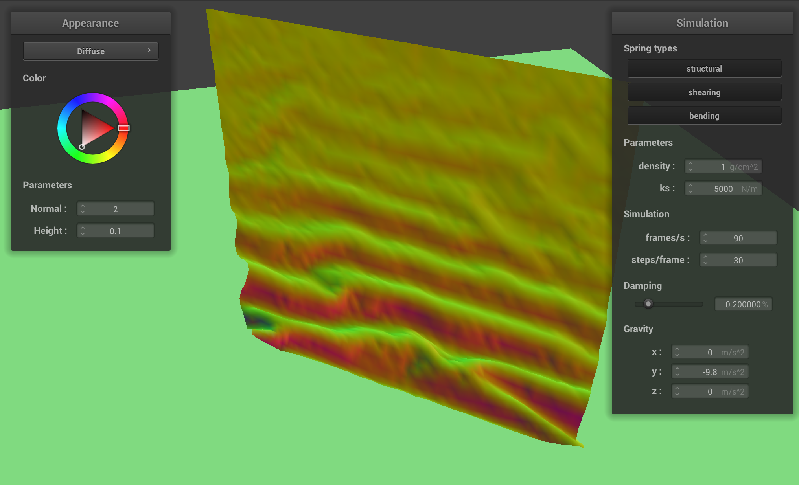
4_2_1.pngScreenshot 2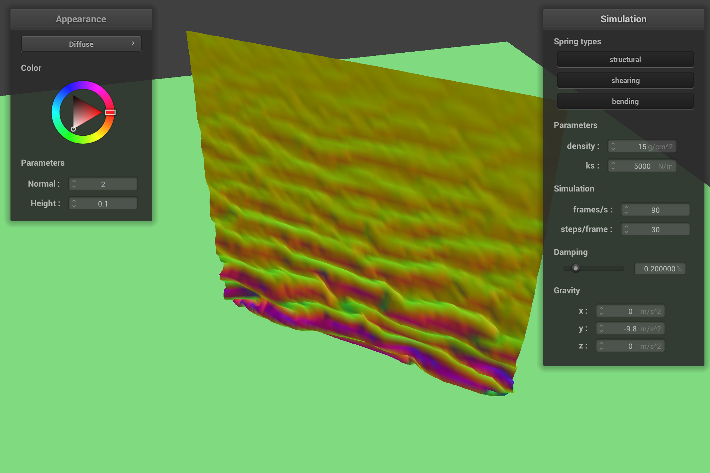
4_2_2.pngScreenshot 3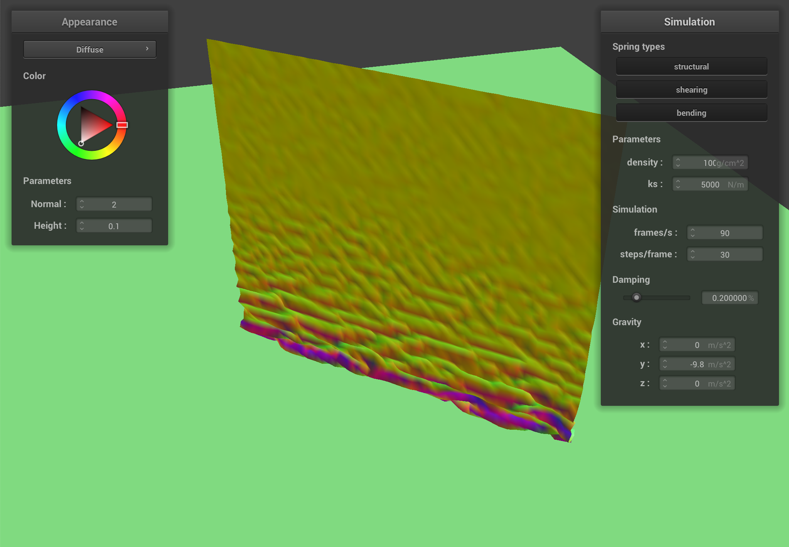
4_2_3.pngScreenshot 4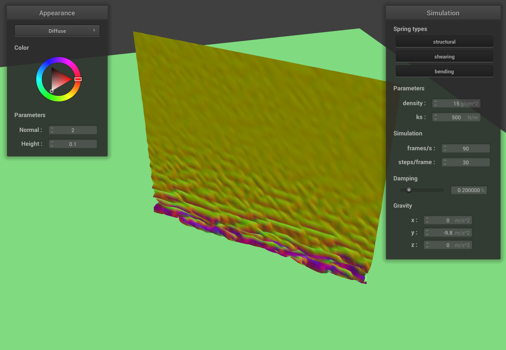
4_2_4.pngScreenshot 5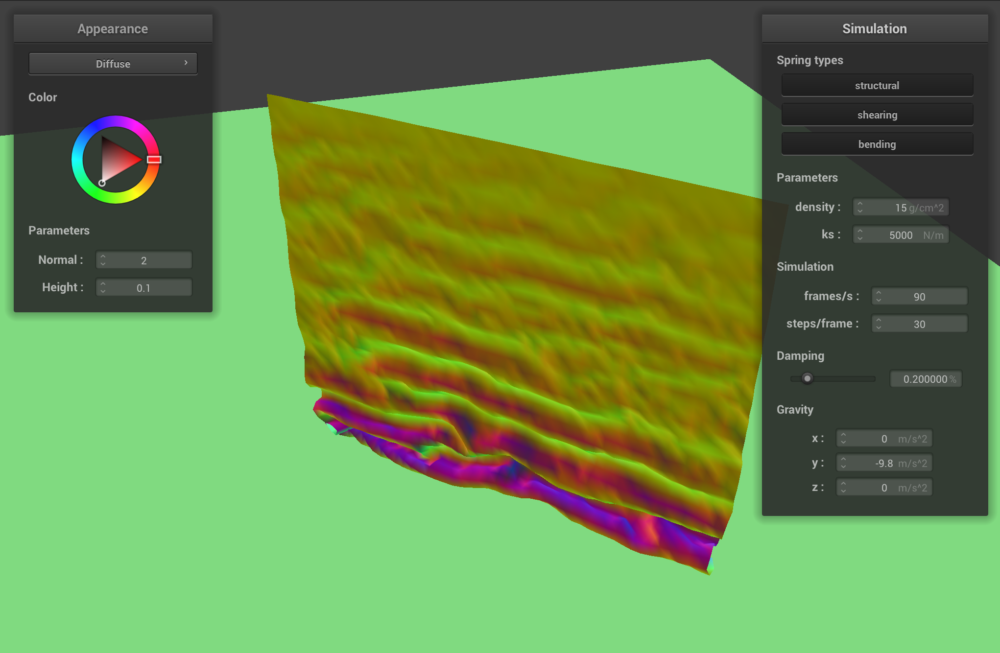
4_2_5.pngScreenshot 6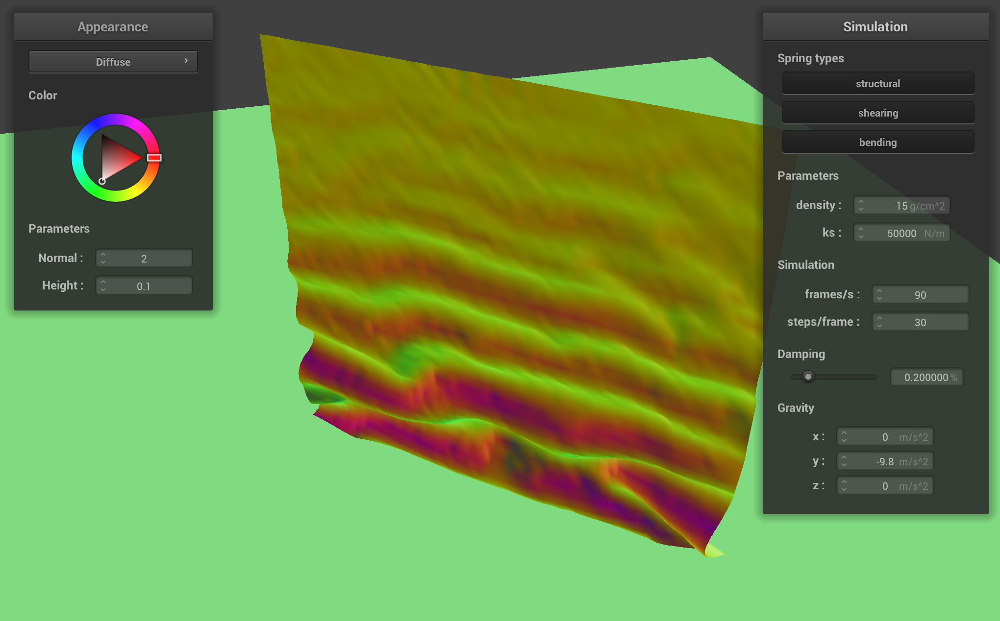
4_2_6.png - Screenshot 1: low
Part 5: Shaders
-
Explain in your own words what is a shader program and how vertex and fragment shaders work together to create lighting and material effects.
A shader program is a small GPU program used during rendering. In this assignment, a shader program usually consists of a vertex shader paired with a fragment shader.
The vertex shader runs once per vertex. It transforms vertex positions into screen space and passes useful data forward, such as world-space position, normals, UV coordinates, and tangents.
The fragment shader runs once per rendered fragment or pixel. It uses the interpolated values from the vertex shader to compute the final color. This is where lighting, texture lookup, bump mapping, mirror reflections, and most of the visible material behavior happen.
Together, the two shaders let the GPU evaluate material and lighting effects in parallel instead of doing all of that work on the CPU.
-
Explain the Blinn-Phong shading model in your own words. Show a screenshot of your Blinn-Phong shader outputting only the ambient component, a screen shot only outputting the diffuse component, a screen shot only outputting the specular component, and one using the entire Blinn-Phong model.
The Blinn-Phong model combines three lighting terms: ambient, diffuse, and specular. Ambient represents a constant base level of light so that shadowed areas are not completely black. Diffuse represents matte lighting and depends on how directly the surface faces the light. Specular represents the shiny highlight and is based on the half-vector between the light direction and the view direction.
In the shader, the final color is the sum of those three terms:
ambient + diffuse + specular.To isolate the individual components, I temporarily edited
Phong.fragso the shader output only one term at a time before switching back to the full combined result.- Screenshot 1: ambient-only output, which looks flat and evenly colored because it does not depend on surface orientation.
- Screenshot 2: diffuse-only output, which shows smooth light falloff based on the angle between the light and the surface normal.
- Screenshot 3: specular-only output, which mostly shows concentrated highlights where the reflected lighting aligns with the viewer.
- Screenshot 4: the full Blinn-Phong model, which combines all three terms into a more complete shaded appearance.
Screenshot 1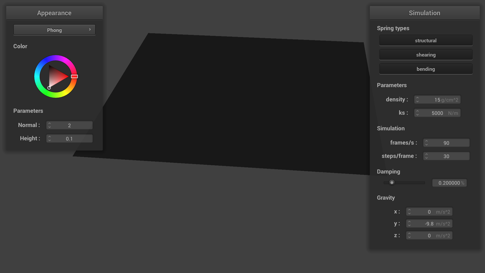
5_1_1.pngScreenshot 2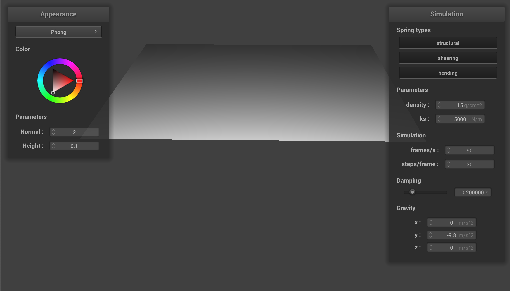
5_1_2.pngScreenshot 3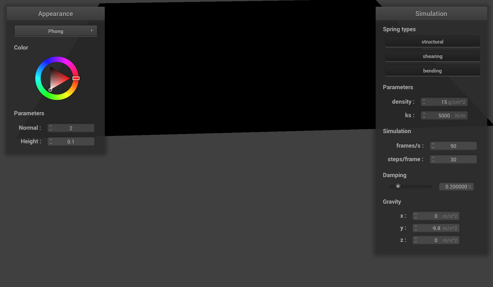
5_1_3.pngScreenshot 4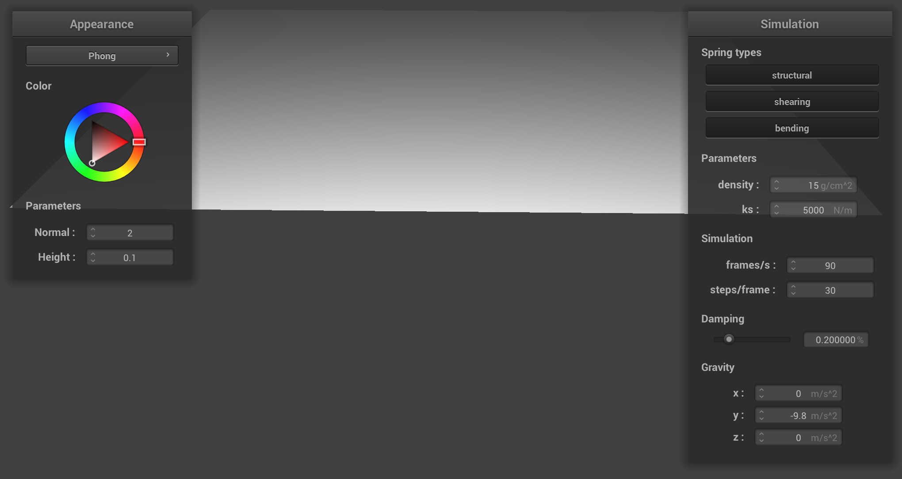
5_1_4.png -
Show a screenshot of your texture mapping shader using your own custom texture by modifying the textures in
/textures/.Screenshot 1 below shows the texture mapping shader using my custom texture from the
/textures/directory.Screenshot 1
5_2_1.png -
Show a screenshot of bump mapping on the cloth and on the sphere. Show a screenshot of displacement mapping on the sphere. Use the same texture for both renders. You can either provide your own texture or use one of the ones in the textures directory, BUT choose one that's not the default
texture_2.png. Compare the two approaches and resulting renders in your own words. Compare how your two shaders react to the sphere by changing the sphere mesh's coarseness by using-o 16 -a 16and then-o 128 -a 128.Add your Part 5.4 response here.
Screenshot 1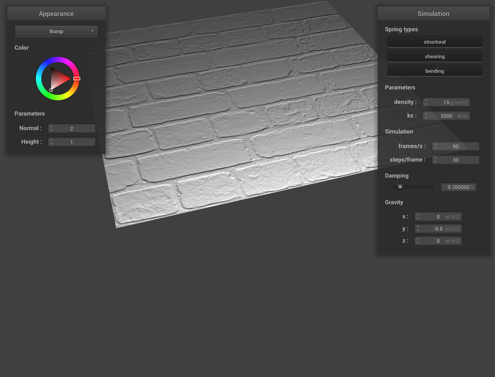
5_3_1.pngScreenshot 2
5_3_2.pngScreenshot 3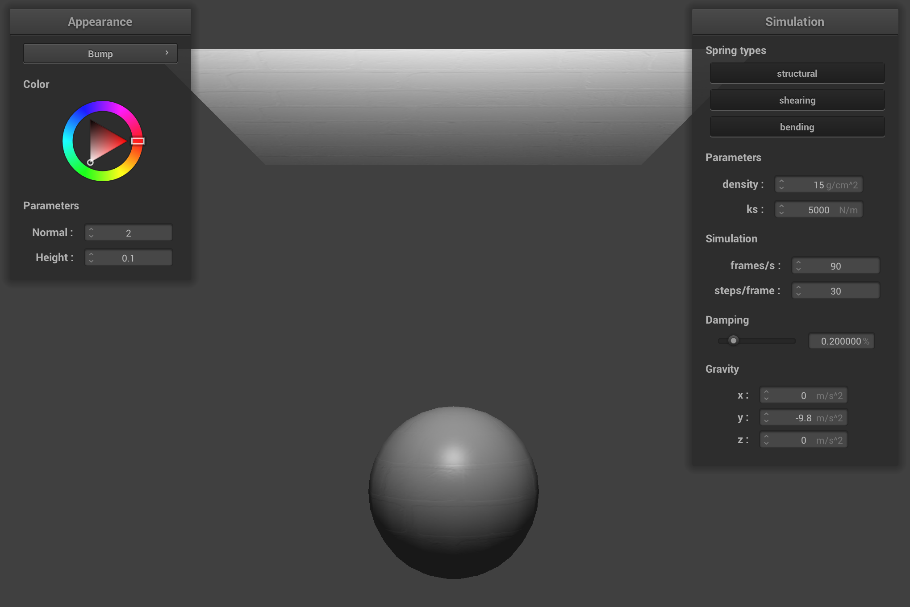
5_3_3.pngScreenshot 4
5_3_4.pngScreenshot 5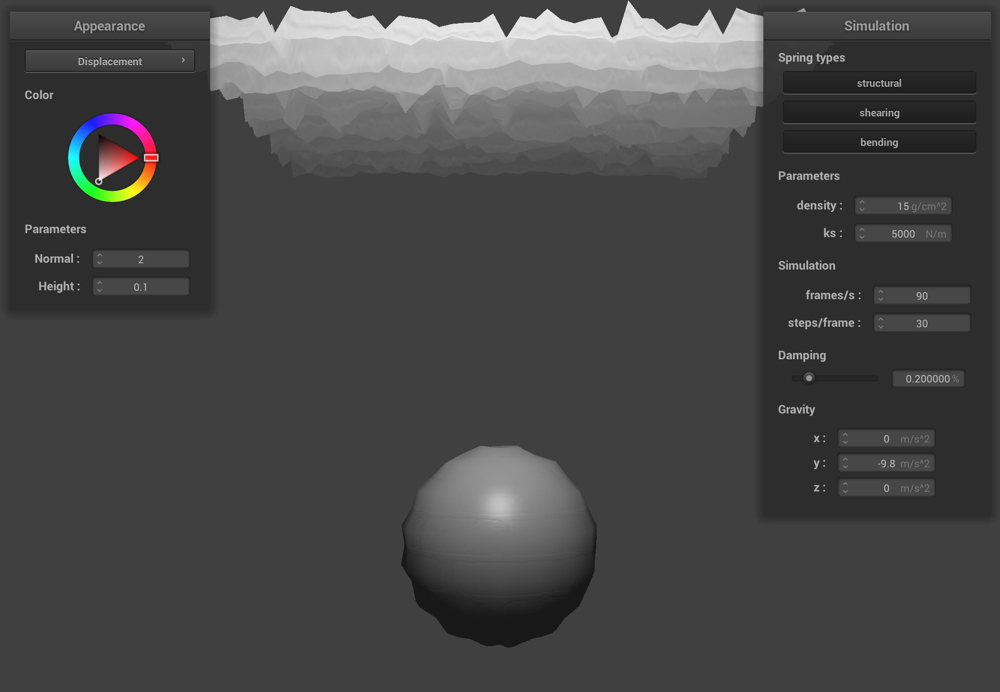
5_3_5.pngScreenshot 6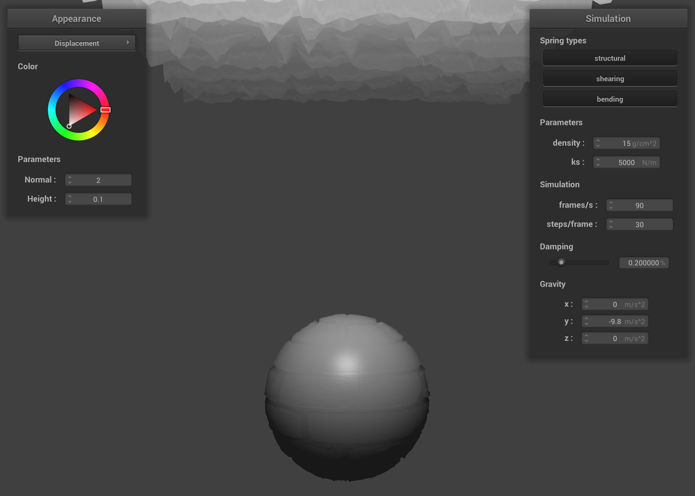
5_3_6.png -
Show a screenshot of your mirror shader on the cloth and on the sphere.
Screenshots 1 and 2 below show the mirror shader on the cloth and on the sphere.
The mirror shader computes the view direction from the camera to the fragment, reflects it around the surface normal, and samples the cubemap in that reflected direction. On the cloth, the result looks shiny and environment-reflective. On the sphere, the reflection appears cleaner and easier to read because the sphere has smooth, continuous normals.
Screenshot 1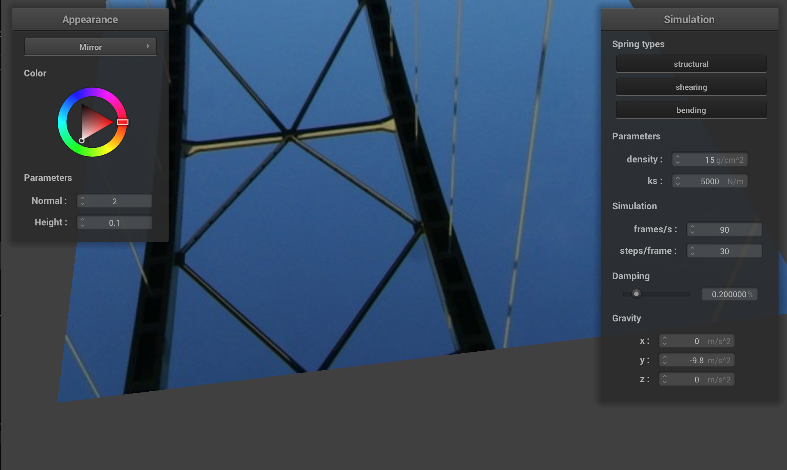
5_4_1.pngScreenshot 2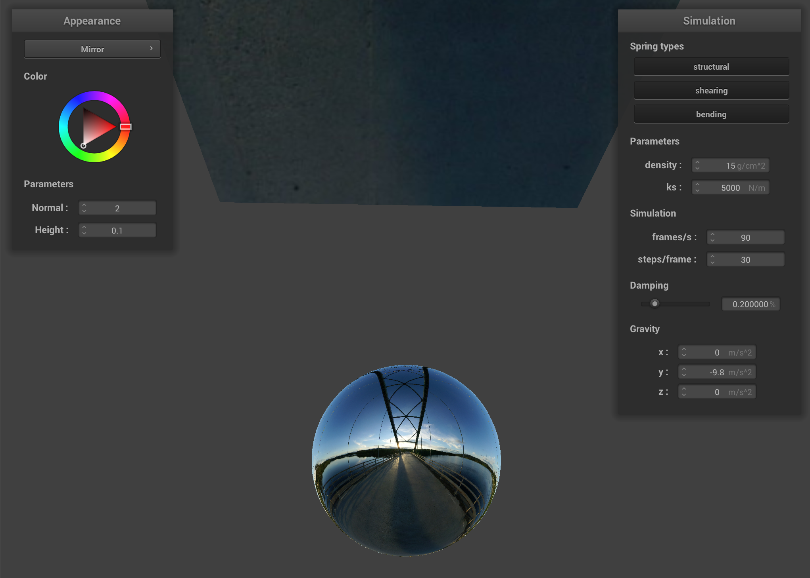
5_4_2.png -
Explain what you did in your custom shader, if you made one.
I did not implement a custom shader. I completed the required Diffuse, Phong, Texture, Bump, Displacement, and Mirror shaders instead.